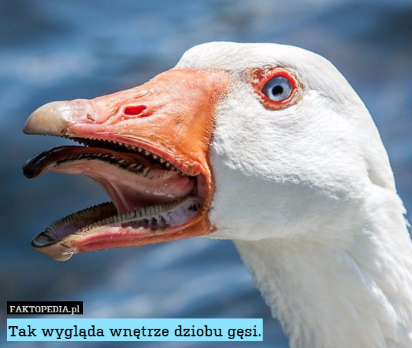

Gęsi
Gęsi, gęsiowate – podrodzina ptaków z rodziny kaczkowatych. Obejmuje gatunki wodne, zamieszkujące cały świat. Te duże ptaki charakteryzują się brakiem różnic w ubarwieniu między samcem i samicą
Kategoria nadrzędna:
Kaczkowate
Długość życia:
Bernikla kanadyjska: 10 – 24 lata, Gęś łabędzionosa: 20 lat
Liczba składanych jaj:
Bernikla kanadyjska: 2 – 9,
Rozpiętość skrzydeł:
Bernikla kanadyjska: 1,3 – 1,8 m,
Gromada:
ptaki
Królestwo:
zwierzęta
